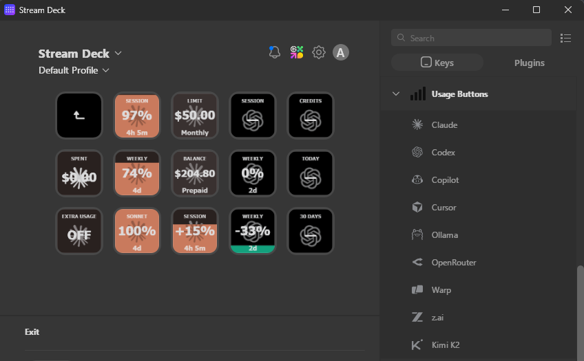
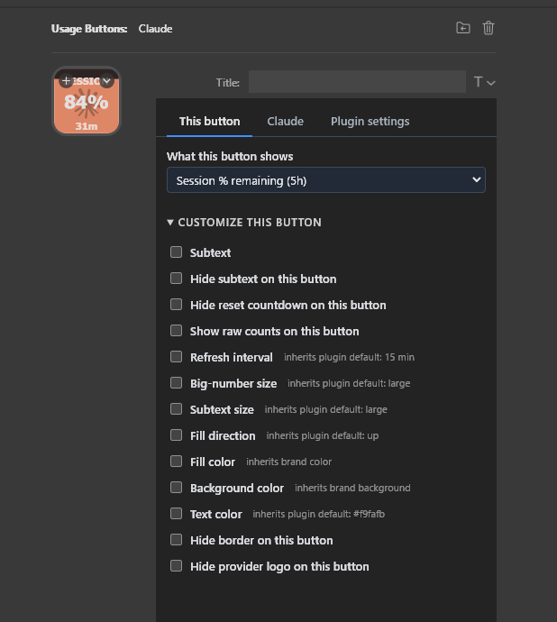
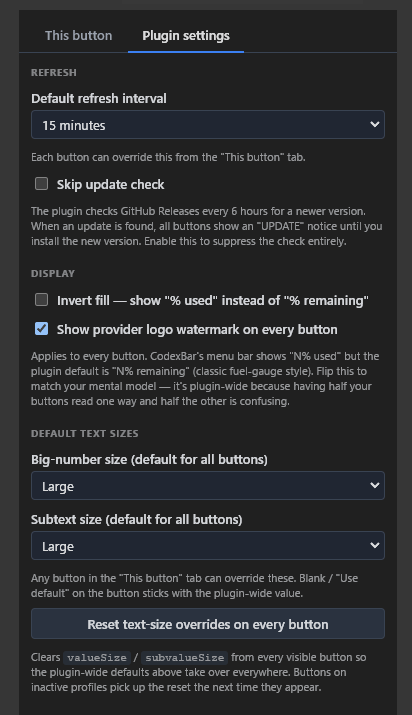

Turn every AI-coding-assistant usage stat — session %, weekly %, credits balance, reset countdowns, per-model quotas — into a live Stream Deck button with a dynamic fill icon. Know exactly how much runway you have left at a glance.

Each metric becomes its own Stream Deck key. The background fills (or drains) in proportion to the current value, so you can read the whole dashboard without squinting.
Every key renders as a compact SVG whose fill is driven by the current value — watch your session window drain in real time.
Shared per-provider snapshot cache coalesces all button requests into one HTTP call, so adding six Claude keys still polls Anthropic once.
Each button carries its provider's logo as a watermark so you can tell a Claude tile from a Codex tile at a glance, even when the meter is full.
Subvalue line shows exactly when each window resets — 2h 15m, 5d, 47s. Format adapts to the remaining duration.
Money metrics colorize automatically — orange when your balance dips below 20% of the cap, red when spending hits the monthly limit.
Weekly meters show whether you're ahead or behind your linear burn rate — "Behind (-42%)" means you have headroom to spare.
Scans Claude and Codex CLI session logs on disk to show today's spend and last-30-day totals with per-model pricing — no API calls needed.
Written in Go — compiles to a ~10MB static binary with ~5MB memory footprint. No runtime dependencies.
8 providers are live. More coming, mirroring CodexBar's full provider list.
Each button gets its own metric, colors, and thresholds. Plugin-wide defaults keep things consistent.


Written in Go — compiles to a ~10MB static binary with ~5MB memory footprint. No runtime dependencies.
Requires Go.
git clone https://github.com/anthonybaldwin/UsageButtons.git cd UsageButtons
Compiles to a single native binary. Cross-compilation works out of the box.
go build -o io.github.anthonybaldwin.UsageButtons.sdPlugin/bin/plugin-win.exe ./cmd/plugin/
Creates a junction (Windows) or symlink (macOS) so rebuilds take effect without reinstalling.
./scripts/install-dev.sh --restart
In Stream Deck, drag a provider (e.g. Claude, Codex, Copilot) onto any key, then pick a metric from the Property Inspector. Configure OAuth or paste a session cookie for providers that need it.